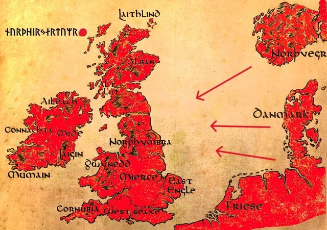

Felfedezések és hódítások:
A "Vikingek" sorozatban a felfedezések és hódítások központi szerepet játszanak a cselekményben. A vikingek, élükön Ragnar Lothbrokkal, merész expedíciókat indítanak nyugat felé, hogy új földeket fedezzenek fel és gazdag zsákmányt szerezzenek. Az első nagyobb hódításuk Lindisfarne-ben történik, ahol meglepetésszerűen megtámadják a keresztény kolostort, ami hatalmas gazdagságot hoz számukra. Ezt követően további portyákat szerveznek Anglia és Franciaország partjai mentén, ahol számos várost fosztanak ki és terjesztik hírnevüket. A sorozat bemutatja a viking hajóépítés és navigáció fejlettségét is, amely lehetővé tette számukra, hogy messzire eljussanak az ismeretlen vizeken. A felfedezések során a vikingek nemcsak gazdagságot szereznek, hanem új kultúrákkal is találkoznak, ami befolyásolja életmódjukat és világnézetüket. Később a sorozat a vikingekterjeszkedésének csúcspontját ábrázolja, beleértve a monumentális Párizs ostromát, amely Ragnar legnagyobb katonai és stratégiai sikerének bizonyult, megmutatva a vikingek képességét a nagyszabású kontinentális hadjáratokra. Ragnar halála után a fiai, élükön Csonttalan Ivarral, bosszúhadjáratot indítottak, ami a Nagy Pogány Sereg behatolásához és az angolszász királyságok nagy részének meghódításához vezetett. Ezzel már nem portyákat, hanem valódi, tartós hódítást hajtottak végre. A sorozat ezenkívül érinti a vikingek további felfedezéseit is, mint például Björn Vasbordának a Földközi-tengeri utazását, Spanyolország és Itália partjai mentén, bemutatva a vikingek kiterjedt hajózási és kereskedelmi hálózatát. Összességében a sorozat a vikingek történetét mutatja be az elszánt felfedezőktől a gyarmatosító uralkodókig, akik örökre átformálták Észak-Európa politikai és földrajzi térképét.
